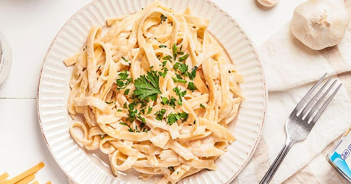

Home
Pasta

Fettuccine Alfredo
Fettuccine Alfredo is a creamy Italian pasta made with butter, cream, and Parmesan cheese, tossed with tender fettuccine noodles and finished with fresh parsley for a rich and comforting dish.
Ingredients
- 250g fettuccine pasta
- 2 tbsp butter
- 1 cup heavy cream
- ½ cup grated Parmesan cheese
- 2 garlic cloves, minced
- Salt & pepper (to taste)
- Parsley (for garnish)
Steps
- Cook pasta until al dente, drain.
- In a pan, melt butter, sauté garlic.
- Stir in cream, simmer 2 to 3 minutes.
- Add Parmesan, mix until smooth.
- Toss in pasta, season with salt & pepper.
- Garnish with parsley, serve hot.